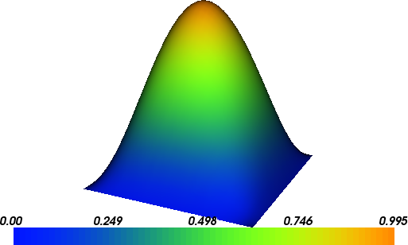

1. Biharmonic equation¶
This demo illustrates how to:
- Solve a linear partial differential equation
- Use a discontinuous Galerkin method
- Solve a fourth-order differential equation
The solution for \(u\) in this demo will look as follows:
{kind=link}
1.1. Equation and problem definition¶
The biharmonic equation is a fourth-order elliptic equation. On the domain \(\Omega \subset \mathbb{R}^{d}\), \(1 \le d \le 3\), it reads
where \(\nabla^{4} \equiv \nabla^{2} \nabla^{2}\) is the biharmonic operator and \(f\) is a prescribed source term. To formulate a complete boundary value problem, the biharmonic equation must be complemented by suitable boundary conditions.
Multiplying the biharmonic equation by a test function and integrating by parts twice leads to a problem second-order derivatives, which would requires \(H^{2}\) conforming (roughly \(C^{0}\) continuous) basis functions. To solve the biharmonic equation using Lagrange finite element basis functions, the biharmonic equation can be split into two second-order equations (see the Mixed Poisson demo for a mixed method for the Poisson equation), or a variational formulation can be constructed that imposes weak continuity of normal derivatives between finite element cells. The demo uses a discontinuous Galerkin approach to impose continuity of the normal derivative weakly.
Consider a triangulation \(\mathcal{T}\) of the domain \(\Omega\), where the union of interior facets is denoted by \(\Gamma\). Functions evaluated on opposite sides of a facet are indicated by the subscripts ‘\(+\)‘ and ‘\(-\)‘. Using the standard continuous Lagrange finite element space
and considering the boundary conditions
a weak formulation of the biharmonic reads: find \(u \in V\) such that
where \(\left< u \right> = (1/2) (u_{+} + u_{-})\), \([\!\![ w ]\!\!] = w_{+} \cdot n_{+} + w_{-} \cdot n_{-}\), \(\alpha \ge 0\) is a penalty term and \(h\) is a measure of the cell size. For the implementation, it is useful to identify the bilinear form
and the linear form
The input parameters for this demos are defined as follows:
- \(\Omega = [0,1] \times [0,1]\) (a unit square)
- \(\alpha = 8.0\) (penalty parameter)
- \(f = 4.0 \pi^4\sin(\pi x)\sin(\pi y)\) (source term)
1.2. Implementation¶
The implementation is split in two files, a form file containing the definition of the variational forms expressed in UFL and the solver which is implemented in a C++ file.
Running this demo requires the files: main.cpp,
Biharmonic.ufl and CMakeLists.txt.
1.2.1. UFL form file¶
First we define the variational problem in UFL in the file called
Biharmonic.ufl.
In the UFL file, the finite element space is defined:
# Elements
element = FiniteElement("Lagrange", triangle, 2)
On the space element, trial and test functions, and the source
term are defined:
# Trial and test functions
u = TrialFunction(element)
v = TestFunction(element)
f = Coefficient(element)
Next, the outward unit normal to cell boundaries and a measure of the
cell size are defined. The average size of cells sharing a facet will
be used (h_avg). The UFL syntax ('+') and ('-') restricts
a function to the ('+') and ('-') sides of a facet,
respectively. The penalty parameter alpha is made a
Constant so that it can be changed in the program without
regenerating the code.
# Normal component, mesh size and right-hand side
n = FacetNormal(triangle)
h = 2.0*Circumradius(triangle)
h_avg = (h('+') + h('-'))/2
# Parameters
alpha = Constant(triangle)
Finally the bilinear and linear forms are defined. Integrals over
internal facets are indicated by *dS.
# Bilinear form
a = inner(div(grad(u)), div(grad(v)))*dx \
- inner(avg(div(grad(u))), jump(grad(v), n))*dS \
- inner(jump(grad(u), n), avg(div(grad(v))))*dS \
+ alpha/h_avg*inner(jump(grad(u), n), jump(grad(v),n))*dS
# Linear form
L = f*v*dx
1.2.2. C++ program¶
The DOLFIN interface and the code generated from the UFL input is included, and the DOLFIN namespace is used:
#include <dolfin.h>
#include "Biharmonic.h"
using namespace dolfin;
A class Source is defined for the function \(f\), with the
function Expression::eval overloaded:
// Source term
class Source : public Expression
{
public:
void eval(Array<double>& values, const Array<double>& x) const
{
values[0] = 4.0*std::pow(DOLFIN_PI, 4)*
std::sin(DOLFIN_PI*x[0])*std::sin(DOLFIN_PI*x[1]);
}
};
A boundary subdomain is defined, which in this case is the entire boundary:
// Sub domain for Dirichlet boundary condition
class DirichletBoundary : public SubDomain
{
bool inside(const Array<double>& x, bool on_boundary) const
{ return on_boundary; }
};
The main part of the program is begun, and a mesh is created with 32 vertices in each direction:
int main()
{
// Make mesh ghosted for evaluation of DG terms
parameters["ghost_mode"] = "shared_facet";
// Create mesh
UnitSquareMesh mesh(32, 32);
The source function, a function for the cell size and the penalty term are declared:
// Create functions
Source f;
Constant alpha(8.0);
A function space object, which is defined in the generated code, is created:
// Create function space
Biharmonic::FunctionSpace V(mesh);
The Dirichlet boundary condition on \(u\) is constructed by
defining a Constant which is equal to zero, defining the
boundary (DirichletBoundary), and using these, together with
V, to create bc:
// Define boundary condition
Constant u0(0.0);
DirichletBoundary boundary;
DirichletBC bc(V, u0, boundary);
Using the function space V, the bilinear and linear forms are
created, and function are attached:
// Define variational problem
Biharmonic::BilinearForm a(V, V);
Biharmonic::LinearForm L(V);
a.alpha = alpha; L.f = f;
A Function is created to hold the solution and the
problem is solved:
// Compute solution
Function u(V);
solve(a == L, u, bc);
The solution is then written to a file in VTK format and plotted to the screen:
// Save solution in VTK format
File file("biharmonic.pvd");
file << u;
// Plot solution
plot(u);
interactive();
return 0;
}
1.3. Complete code¶
1.3.1. Complete UFL file¶
# Elements
element = FiniteElement("Lagrange", triangle, 2)
# Trial and test functions
u = TrialFunction(element)
v = TestFunction(element)
f = Coefficient(element)
# Normal component, mesh size and right-hand side
n = FacetNormal(triangle)
h = 2.0*Circumradius(triangle)
h_avg = (h('+') + h('-'))/2
# Parameters
alpha = Constant(triangle)
# Bilinear form
a = inner(div(grad(u)), div(grad(v)))*dx \
- inner(avg(div(grad(u))), jump(grad(v), n))*dS \
- inner(jump(grad(u), n), avg(div(grad(v))))*dS \
+ alpha/h_avg*inner(jump(grad(u), n), jump(grad(v),n))*dS
# Linear form
L = f*v*dx
1.3.2. Complete main file¶
#include <dolfin.h>
#include "Biharmonic.h"
using namespace dolfin;
// Source term
class Source : public Expression
{
public:
void eval(Array<double>& values, const Array<double>& x) const
{
values[0] = 4.0*std::pow(DOLFIN_PI, 4)*
std::sin(DOLFIN_PI*x[0])*std::sin(DOLFIN_PI*x[1]);
}
};
// Sub domain for Dirichlet boundary condition
class DirichletBoundary : public SubDomain
{
bool inside(const Array<double>& x, bool on_boundary) const
{ return on_boundary; }
};
int main()
{
// Make mesh ghosted for evaluation of DG terms
parameters["ghost_mode"] = "shared_facet";
// Create mesh
UnitSquareMesh mesh(32, 32);
// Create functions
Source f;
Constant alpha(8.0);
// Create function space
Biharmonic::FunctionSpace V(mesh);
// Define boundary condition
Constant u0(0.0);
DirichletBoundary boundary;
DirichletBC bc(V, u0, boundary);
// Define variational problem
Biharmonic::BilinearForm a(V, V);
Biharmonic::LinearForm L(V);
a.alpha = alpha; L.f = f;
// Compute solution
Function u(V);
solve(a == L, u, bc);
// Save solution in VTK format
File file("biharmonic.pvd");
file << u;
// Plot solution
plot(u);
interactive();
return 0;
}